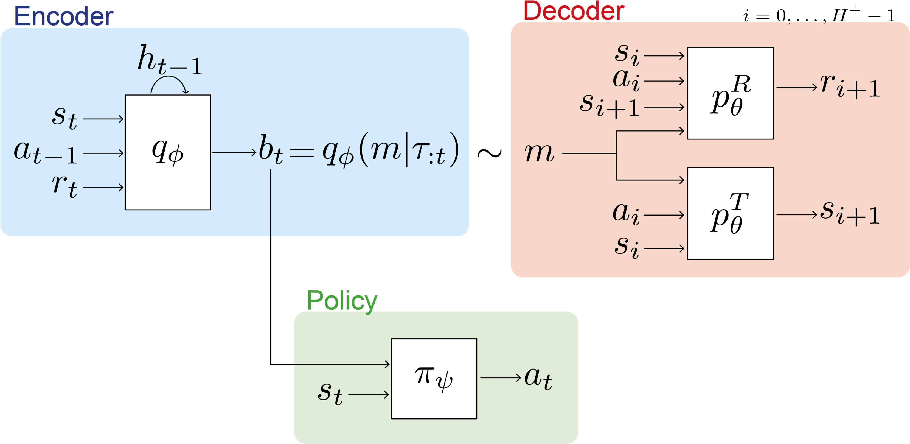

VariBAD
Bayesian-Adaptive MDP
The Bayesian-Adaptive MDP (BAMDP) requires posterior inference on task (transition and reward model) on history

The belief state on task bt(T, R)=p(T, R∣τt)=bt(T)bt(R) updates deterministically according to Bayes rule
|
bt+1(T)=p(T∣τt+1)=p(τt+1)p(τt+1∣T)p(T)=p(τt+1)p(τt∣T)p(T)T(st+1∣st, at)=p(τt+1)p(τt)p(T∣τt)⋅T(st+1∣st, at)∝bt(T)⋅T(st+1∣st, at)
|
bt+1(R)=p(R∣τt+1)=p(τt+1)p(τt+1∣R)p(R)=p(τt+1)p(τt∣R)p(R)R(rt∣st, at)=p(τt+1)p(τt)p(R∣τt)⋅R(rt∣st, at)∝bt(R)⋅R(rt∣st, at)
|
where the prior distribution b0=p(R)p(T). The expected transition and reward function after observing the history τt is
p(st+1∣s≤t, a≤t)=p(st+1∣st, at, τt)=∫T∈TT(st+1∣st, at)bt(T)dT=ET∼bt(T)T(st+1∣st, at)p(rt∣s≤t, a≤t, r<t)=p(rt∣st, at, τt)=∫R∈RR(rt∣st, at)bt(R)dR=ER∼bt(R)R(rt∣st, at)
The agent’s objective in BAMDP is to maximize the expected return with the Bayesian estimation on transition and reward
πmaxJ(π)=Est+1∼p(st+1∣st, at, τt), rt∼p(rt∣st, at, τt), at∼π(at∣st, bt)[t=0∑H−1γtrt]
The Bayes-optimal agent’s exploration is regulated by maximizing the expected return, thus balanced with exploitation
Approximate Task Inference
However, direct solving BAMDP is intractable, VariBAD proposes to make approximate task inference via meta-learning

The encoder qϕ(m∣τt) is trained by amortised inference with the decoder pθ(r, s′∣s, a, m) to maximize the ELBO
EτH∼Mlogpθ(τH)≥ELBOt(ϕ, θ∣M)=EτH∼M[Em∼qϕ(⋅∣τt)logpθ(τH∣m)−DKL(qϕ(m∣τt) ∣ p(m))]
where the prior p(m) is set to the previous posterior qϕ(m∣τt−1) and the reconstruction term logpθ(τH∣m) is
logpθ(τH∣m)=log[pθT(s0∣m)i=0∏H−1pθT(si+1∣si, ai, m)pθR(ri+1∣si, ai, m)]=logpθT(s0∣m)+i=0∑H−1logpθT(si+1∣si, ai, m)+logpθR(ri∣si, ai, m)
A meta policy πψ(a∣s, qϕ(m∣τt)) is trained jointly on multiple tasks derived from p(M) by common RL algorithms
ϕ, θ, ψmaxL(ϕ, θ, ψ)=EM∼p(M)[J(πψ∣M)+t=0∑HELBOt(ϕ, θ∣M)]
where the p(M) can be viewed as the prior in BAMDP and meta-RL can thus be viewed as an instance of BAMDP